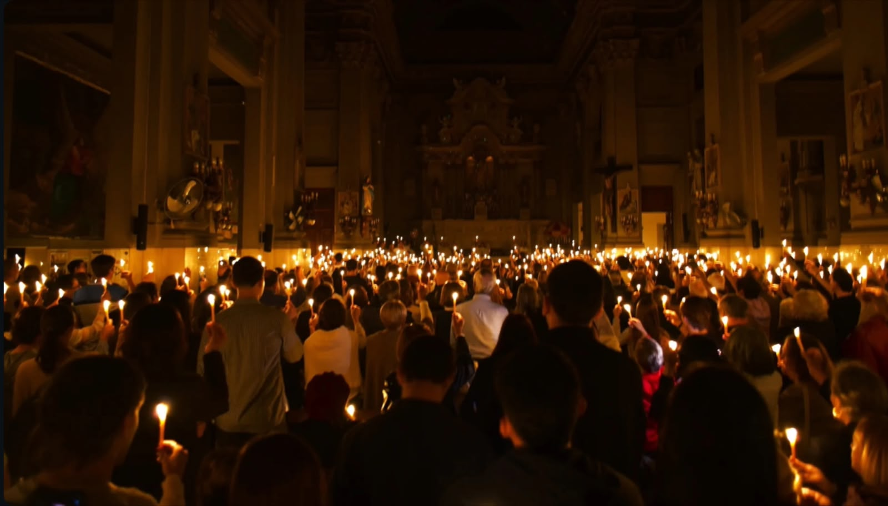
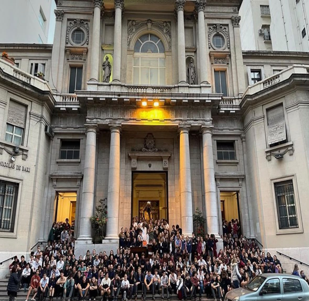
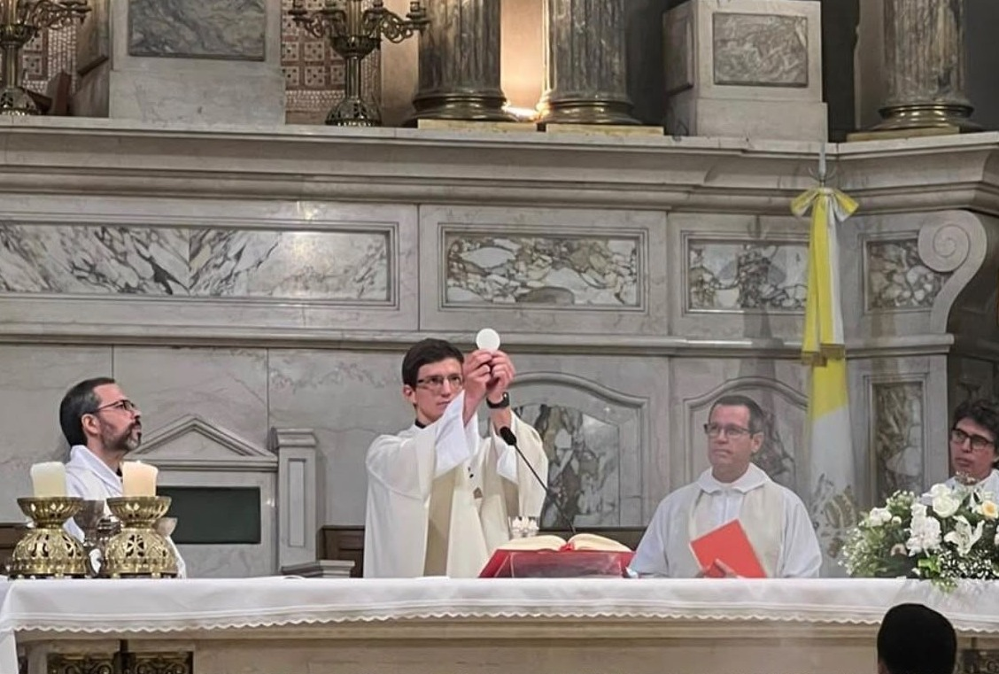

foto
“Tu forma
de amar
nos mueve
a amar”
Quiero
recibir un
sacramento


HORARIOS
MISAS
Lunes a Viernes: 9:30, 11:30, 18:30 y 19:30 hs
Sábados: 9:30, y 18:30 hs
Domingos: 8:30, 9:30, 10:30, 11:30 (niños), 12:30, 18, 19, 20:15 hs (jóvenes)
Por los enfermos con unción: 1 viernes del mes a las 18:30hs
Días 25 de cada mes: 9:30, 11:30, 18:30 y 19:30 hs
Feriados: 9:30 y 19:30 hs
ADORACIÓN EUCARÍSTICA
Lunes de 20 a 20:30 hs
Jueves de 19 a 19:30 hs
1 miércoles del mes 20 a 21 hs: ADORACIÓN JOVEN
Por los enfermos con unción: 1 viernes del mes a las 18:30hs
3 martes del mes 20 hs
SECRETARÍA PARROQUIAL
Lunes a viernes: de 8:30 a 13:30 hs y de 14 a 19:30 hs
Sábados: de 9 a 12 hs
EL TEMPLO ESTÁ ABIERTO
Lunes a viernes: de 7:30 a 20:30 hs
Sábados: de 9 a 13 hs y de 16:30 a 20:30 hs
Domingos: de 8 a 13:30 hs y de 17 a 21:30 hs
Días feriados: de 9 a 12 y de 18 a 20 hs